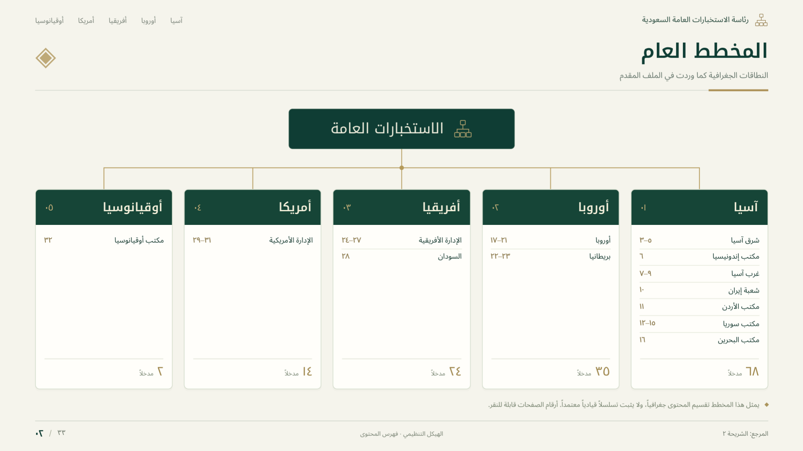

A hacker group allegedly tied to Yemen’s Houthi rebels has dumped what it says is a roster of Saudi intelligence officers and their stations around the world.
The files list names, ranks, and personal phone numbers. They also list the foreign liaison officers, local collaborators, and drivers who work with Saudi intelligence abroad.
This was no whistleblower. It was an enemy trying to burn a rival spy service, and the files may be doctored.
But the phone numbers work like keys. OctoProbe used them to reach homes, cars, and app accounts in minutes.
The Dump
The group calls itself Uways Qarani. It posted its claims on a hacking forum on October 4 and 5, 2026.
Distributed Denial of Secrets (DDoSecrets), a nonprofit that archives leaked data, republished the files on October 14. It called them “An organizational chart and identity documents identifying hundreds of members of the General Intelligence Presidency (GIP), Saudi Arabia's primary intelligence agency.”
The GIP is Saudi Arabia’s foreign spy service. The release holds an org chart, a thirty-one-page station document, a list of 556 personnel, and hundreds of images.
Who Dumped It
DDoSecrets says Uways Qarani is allegedly affiliated with the Houthis, the Iran-backed movement at war with Saudi Arabia. It added: “The data was flagged by Handala, which is alleged to have ties to Iranian intelligence.”
The threat-intelligence firm StealthMole tracked the group for weeks. It wrote: “Each leak is presented as building on the last.”
The hackers say they went further this time. StealthMole reports they claimed “the 500 officers had been matched against the Saudi water-subscriber data claimed the week before to find their homes.”
Who actually runs the group is unknown. StealthMole wrote: “Uways Qarani itself is not designated, and nothing in its posts explains who runs it.”
Why It Could Be Fake
A leak from an enemy at war is a weapon. It can mix real names with planted ones to sow panic or frame innocent people.
DDoSecrets warns that with cyberwar data “there is an increased chance of malware, ulterior motives and altered or implanted data, or false flags/fake personas.”
Dark Web Informer wrote: “The authenticity, completeness, source and current availability of the claimed dataset have not been independently verified.” Undercode News said “the material should be treated as an unverified threat-actor claim, rather than a confirmed breach.”
The analysis firm SpecialEurasia warned that “it is not currently possible to independently corroborate the identity, employment status or contact details of these individuals.”
A Map of Saudi Spying
The station document opens with an index. It splits Saudi intelligence work into five regions: Asia, Europe, Africa, the Americas, and Oceania.

Asia dominates, with offices tied to Iran, Syria, Jordan, Bahrain, and Indonesia. Europe includes a separate section for Britain. The Americas section covers a Washington office.
The pages look like slides built from source files, not raw internal records. That fits a group out to make a splash.
Friends Get Burned Too
Spy services trade secrets through liaison, an official channel between friendly agencies. Each side names a liaison officer as its point of contact. An attaché is an officer posted openly to an embassy.
The station file is built around that channel. Every page carries the heading “Offices and External Liaison” (المكاتب والارتباط الخارجي).
Dozens of cards name partner nations’ liaison officers. They include a German liaison officer (ضابط الاتصال الألماني), a British station director (مدير المحطة البريطانية), and a Yemeni liaison officer, National Security (ضابط الاتصال اليمني (الأمن القومي)).
Diplomatic titles show up too: a Qatar attaché office (ملحقية قطر), an embassy secretary in Indonesia (سكرتير السفارة في إندونيسيا), and a consul at the Saudi embassy in Jordan (قنصل سفارة السعودية بالأردن).
Declared liaisons were never secret to their hosts. But now any hostile service can see which of America’s and Europe’s spy agencies talk to Riyadh, and through whom.
The hackers claimed more. StealthMole reports their first post “accused them of working with Mossad and the UAE under forged diplomatic cover.” The files show no proof of that.
The Collaborators and the Drivers
Every spy service runs on sources, people who pass secrets to an officer. Stations also hire locals, such as drivers and fixers, who see where officers go and whom they meet.
The files never use the word source. But two cards on the Syria pages are titled Syrian collaborator (متعاون سوري), next to a Syrian file management team (فريق إدارة الملف السوري).
Other cards list a Pakistani driver (سواق باكستاني), drivers for the Sudanese liaison officer (سواق ضابط الاتصال السوداني), and a Sudanese, for camp rentals (سوداني لتأجير المخيمات) contact.
The files don’t say whether a collaborator is a paid source or a volunteer. SpecialEurasia said only that the material “appears to associate individuals with contact information and organisational functions.”
These are the people with the least protection. An officer has a passport and a government behind him. A collaborator in a war zone has only his anonymity, and this leak prints his phone number.
Minutes to a Home Address
OctoProbe ran two people the document places in its Washington office through its identifier graph, a map of how phone numbers, emails, and accounts connect.
In about sixteen minutes, the trail ran from the leaked phone numbers to home addresses in Northern Virginia, license plates, and Washington-area phone lines.
It also turned up a language-learning profile, a check-in app account, a Telegram handle, and a LinkedIn page. Relatives’ names and birth dates came along for the ride.

That is what an adversary can do with this list.
Find the house. Find the car. Follow the officer to the source.
Reviews That Put Them in Riyadh
Email accounts tied to the leaked contacts left a trail on Google Maps. OctoProbe logged fifteen location observations from Google Maps reviews linked to those emails.
The visible reviews run from October 2021 to August 2026. All but one are in Riyadh: Hittin, Olaya Street, Ar Rabi (three times), Alhazm, and Shubra.
The outlier is a restaurant in Istanbul, reviewed in October 2025. Most of the activity falls in the last eighteen months.

That corroborates a large part of the leak’s Saudi footprint. It does not verify the files. But it shows one more trail that cover can’t hide: a restaurant review, posted from a linked account, pins its author to a neighborhood.
Cover Doesn’t Last
Spies depend on cover, a false or limited identity that hides their real job. They guard it with operational security (OPSEC), habits that keep enemies from learning what they do.
That worked when the trail was paper. Now one phone number links to a carrier, a car, an address history, and a dozen apps.
Human intelligence (HUMINT), spying through people instead of machines, still matters. Officers still meet sources face to face.
But the officer carries a phone that never stops talking. Once a leak ties his name to that number, his cover is gone in an afternoon, and his sources are next.
Bottom Line
Confidence: The release is real. Whether every name is genuine is unproven. The Northern Virginia link carries moderate confidence; the risk to anyone named is high either way.
Method: OctoProbe read the DDoSecrets index, the station PDF (Arabic titles transcribed from page images and linked by page), the personnel file, and the reports linked above, then expanded identifiers on October 16, 2026.
Disclaimer
This is an analytic assessment of leaked material released by a hostile group. The documents are unverified, and no one has been shown to be an intelligence officer.